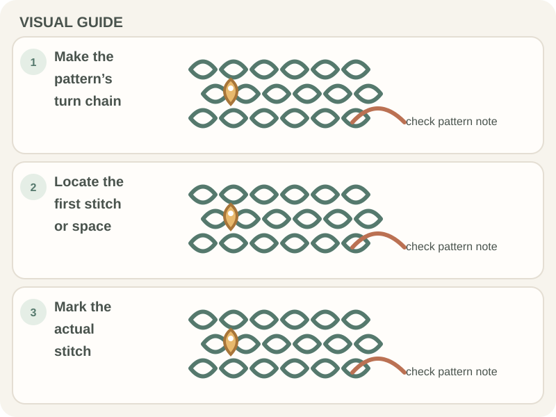

Patterns & Troubleshooting · Beginner guide
How to Find the First Stitch in a Crochet Row
The first stitch of a new row is usually beside the turning chain, but the pattern determines whether that chain counts as a stitch.

Marking the first stitch makes it easier to keep straight edges and to avoid crocheting into the wrong loop at the row end.
Before you begin
Keep the pattern’s row-end notes visible and use a removable stitch marker. Identify the turning chain separately from the first stitch top.
Step-by-step instructions
- Finish the row and make the turning chain required by the pattern.
- Rotate the work, then look for the first stitch or space named in the next instruction.
- Place a marker in that stitch if it is difficult to see.
- At the far edge, follow the pattern’s rule for the turning chain and count the row.

How to check your work
You should see the first stitch top beside the turning chain, with the marker placed through the correct stitch rather than around a gap.
Common beginner problems
- The edge has a hole: You may have skipped the first stitch or worked too far from the edge; check the row count.
- The row gains a stitch: You may have worked into both the turning chain and first stitch when the pattern counts one.
- The turning chain is hard to spot: Use a marker in the first stitch before turning the next row.
Do not guess at the edge
Patterns vary on whether the turning chain counts as a stitch and where the first stitch goes. Follow the written instruction; use a marker in the first actual stitch to keep the edge visible.
Frequently asked questions
Is the turning chain the first stitch?
Sometimes a pattern counts it, sometimes it does not. Check the pattern’s note.
Where should the marker go?
In the first actual stitch or space named for the next row, not automatically in the turning chain.
Why do my edges have holes?
Check whether the first or last stitch was missed and whether the turning-chain rule is being followed.